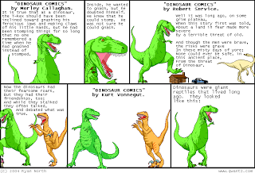
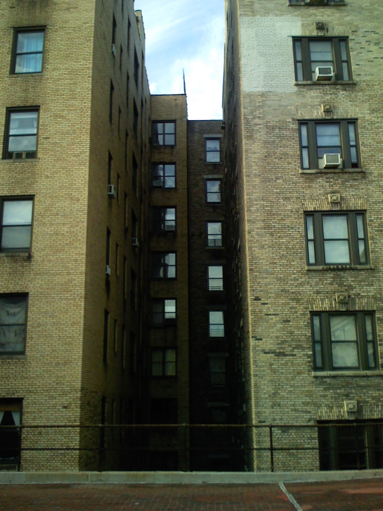
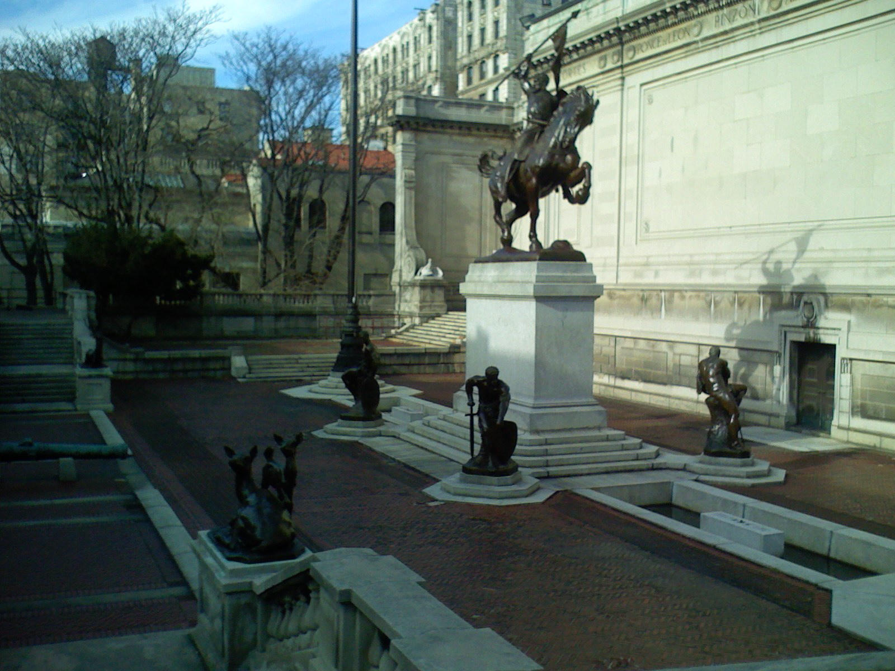

Dinosaur Comics lead to prior home via Timequake
Wednesday January 16, 2008
This is a whole chain of events. It begins with procrastinating last week, when I decided to look into Dinosaur Comics. I instantly adored T-Rex and friends, and was unable to do any grading whatsoever until I had read every Dinosaur Comic online. There are over eleven hundred of them.

The subject matter of Dinosaur Comics varies as much as the visuals don't, but it's consistently great, and sort of in the same spirit as xkcd. It got big points with me for a particular comic done in the style of several authors in turn, including personal hero Kurt Vonnegut.
After two days, I ran out of comics and entered withdrawal. At some point, it seemed like a good idea to run a Google search on the following: "Dinosaur Comics great".
What I found there in the first page of results was an interview with Dinosaur Comics' creator Ryan North. It's from The Webcomics Examiner. So "webcomics" is not only no longer a neoligism requiring explanation, in the company of "blog", but it also has its own review. The motto of The Webcomics Examiner is "Discerning criticism of an evolving artform".
In the interview, North says in one place "Poo-tee-weet", which is the sound of a bird at the end of Slaughterhouse-Five. When the interviwer recognizes the Vonnegut reference, North expands on his admiration for the master Humanist author and mentions inparticular his 1997 novel Timequake.

I had never read Timequake, so I went to the Barnes & Noble at Lincoln Center and got a copy. I read it over the weekend, and here's the thing: the main setting of the fictional action is my old block!
From December 2006 through August 2007, I lived at 788 Riverside Dr 9C, New York, NY 10032, between 155th and 156th streets. Most of the action in Timequake takes place in and around a complex whose location Vonnegut describes as "way-the-hell-and-gone up on West 155th Street in Manhattan," but which could also be described as "right by where I used to live!"
This is a real complex, including The American Academy of Arts and Letters and the former National Museum of the American Indian, and which surrounds The Audubon Terrace. I never knew exactly what it all was when I lived there. Never noticed it all properly, I suppose. But my kitchen window back then had line of sight with The Audubon Terrace. I got a view in the other direction for the first time when I went back this past Sunday.
In the book, the former National Museum of the American Indian was a homeless shelter. For all I know, it may have been, in 1997. Now it's Boricua College.
{kind=link}
I had just one experience with the American Academy of Arts and Letters while I was living so near to it, and I had it without even realizing. When I was moving in to that apartment, I drove in all my belongings from Poughkeepsie to NYC in the champagne PT Cruiser I had then. I parked along 155th street, like so many other cars. I did not suspect that I was blocking the driveway of the American Academy of Arts and Letters, because the curb looked just like it did everywhere else, and I was not familiar with the custom that New York City driveways have of leading straight into the middle of buildings through doors not much bigger than those meant for people.
I left the car there for some three days. I was just moving in, and I was not about to try to find another parking spot in the city, even that way-the-hell-and-gone up in Manhattan.
I finally came to my senses and went to check on the car. It was not there. Oh no! My car was stolen in crime-ridden New York!
Of course it hadn't been, and I managed to get in touch with the nice folks inside the building, and they helped me call the cops or towing company or whatever and track down the car, all without my really knowing what organization's phone I was on.
The helpful employees told me that they had waited as long as they could before calling for a tow. The car had been there up until an hour or two before I came around. It took well into that night and a lot of subway riding to get it back.
This past Sunday I walked about 14 blocks down Broadway from my current apartment to the complex. I don't even remember ever seeing the gates to the terrace open before, but they were on this day. There was a lot there for those who troubled to look. Beaux-arts buildings with ornate doors, a classical sculpture garden, and even signage here and there explaining everything.
The buildings and entryways were frequently inscribed with important-sounding messages. A few examples: "Great men are they who see that thoughts rule the world." "By the gates of art we enter the temple of happiness." "All passes, art alone untiring stays." "Dedicated to the memory of of Mary Wilkins Freeman and the women writers of America." "The National Museum of the American Indian has relocated to George Gustav Heye Center in the Alexander Hamilton U.S. Custom House at One Bowling Green in lower Manhattan."
I think I could have explored some galleries inside the buildings, but that was not my interest. I took some pictures and savored the twin experiences of walking the setting of Vonnegut's novel, where he himself surely walked, and becoming aware of what had been the background of my life for half a year. God does such a good job with the backgrounds. They're so detailed!

*

{kind=link}
*
{kind=link}
*

*

*

*

This post was originally hosted elsewhere.